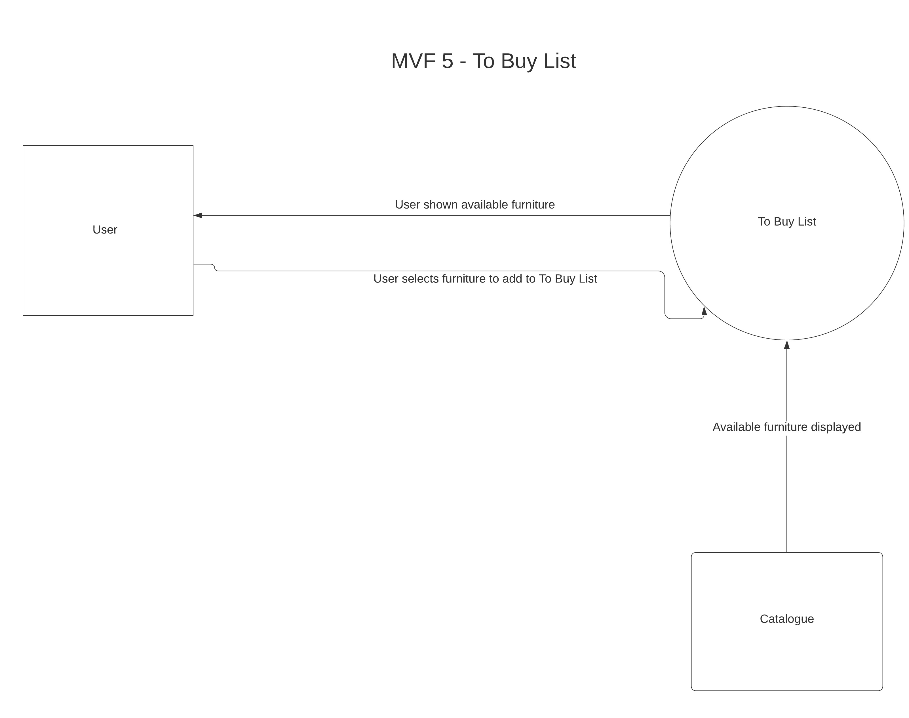

Description
FlippingRooms also provides the user an option to create a to-buy list. When the user is satisfied with the layout of the new room, the user is allowed to add their desired furniture in a checklist to ensure nothing is missed out. Users are able to add notes and comments like dimensions to ensure the right product is bought when they are out to shop and make their ideal room a reality.
|
Sean is looking to remodel his home. He wants an app that allows
him to remodel his house and store the types of furniture
he is looking to purchase later on. Sean downloads the
FlippingRooms app that allows him to do both tasks.
The to buy list feature allows Sean to select the
desired furniture in a checklist and add descriptions to the
furniture. Sean is able to insert the price, dimensions,
colour and other descriptions to his liking.
|
1. Sean clicks on FlippingRooms app
2. Sean clicks logs in / signs up on the app
3. Sean clicks on the 'Start remodelling'button
4. Sean clicks on the 'to buy list'button on the features page
5. Sean types the desired furniture in the notepad section with descriptions
6. Sean is able to add or delete the description of the furniture added
7. Sean is able to check off or uncheck the furniture added
|
System Context Diagram

Testing
Attempt to open empty buy list and ensure empty card message is displayed
Add furniture from catalogue into buy list
Remove item from buy list
Ensure dimensions are viewable within buylist